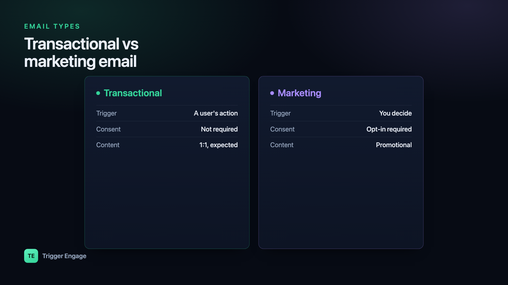

Every email you send is either transactional or marketing — and treating them the same is how you land in spam or break the law. The transactional vs marketing email distinction is not academic hair-splitting; it decides which consent rules apply, how your messages are filtered, and how quickly recipients act on them. This guide explains the difference in plain terms and shows how to send each one well.

What is a transactional email?
A transactional email is triggered by an individual's action and delivers information that person is expecting or needs. It is fundamentally one-to-one: one user did one thing, so your system sends one message in response. Nobody signs up for these — they are a natural part of using your product.
Common examples include:
- Purchase receipts and invoices
- Password resets and one-time passcodes (OTPs)
- Order confirmations and shipping updates
- Account alerts — new sign-ins, security notices, billing failures
- Booking or appointment confirmations
Because the recipient is waiting for these, they carry high engagement and are held to a high reliability bar. A password reset that arrives ten minutes late is a broken product experience, not just a slow email.
What is a marketing email?
A marketing email is promotional. It is sent to a group — one-to-many — to drive an action the sender wants: a purchase, a re-visit, a sign-up, a read. The recipient did not necessarily do anything specific to trigger it; you decided it was time to reach out.
Typical marketing messages include:
- Newsletters and content roundups
- Promotions, discounts, and seasonal offers
- Product announcements and feature launches
- Event invitations and webinar reminders
The defining trait is that marketing email generally requires consent. Because you are contacting people for your own commercial purposes, most jurisdictions expect the recipient to have agreed to hear from you and to be able to stop at any time.
Transactional vs marketing at a glance
The two categories differ on almost every axis that matters operationally:
| Dimension | Transactional | Marketing |
|---|---|---|
| Trigger | An individual's action | Sender's schedule or campaign |
| Consent required | Generally no (it's expected) | Yes — opt-in in many regions |
| Audience | One-to-one | One-to-many / segmented |
| Content | Informational, account-specific | Promotional |
| Opt-out required | No | Yes — every message |
| Sending reputation | Usually a dedicated stream | Separate stream; volume-sensitive |
Why the distinction matters
Consent and the law
At a high level, marketing email is where consent rules bite. Under the US CAN-SPAM Act, commercial email must include a valid physical postal address and a working way to opt out, and you must honor opt-outs promptly. Under the EU's GDPR (and the ePrivacy rules that sit alongside it), marketing to individuals typically requires a clear opt-in and an easy way to withdraw it. Transactional messages are generally treated more leniently because the recipient needs them — but that exemption is narrow. The moment you slip a promotion into a receipt, regulators may treat the whole message as marketing. This is general guidance, not legal advice; confirm your obligations for your regions and audiences with a qualified professional.
Deliverability
Mixing the two streams hurts your email deliverability. Marketing mail draws more spam complaints and unsubscribes, and those signals drag down sender reputation. If your password resets share that reputation, they start landing in spam too. That is why many teams separate the streams entirely — different IP pools or subdomains (for example mail.yourdomain.com for marketing, notify.yourdomain.com for transactional) — so a rough campaign week never threatens critical account mail.
Expectations
Users act on transactional email instantly and read it closely — it is the OTP they need to log in, the receipt they are filing. Marketing email competes for attention on the recipient's terms. Designing, timing, and measuring each type as if it were the other leads to frustrated users and wasted sends.
The gray area: lifecycle and behavior-triggered messages
Not everything sorts cleanly. Onboarding nudges, trial-expiry warnings, and win-back campaigns are behavior-triggered like transactional mail, but promotional in intent like marketing mail. A "you left items in your cart" email fires from a real user action, yet its goal is to sell.
The practical rule: treat these as marketing for consent and opt-out purposes, but send them with transactional-grade timing and reliability. Someone who abandoned a cart five minutes ago should not wait an hour for a nudge. These lifecycle emails and drip campaigns are where the categories blur most — so build them with clear consent tracking baked in from the start.
How to send each well
Transactional email must be fast and reliable, which means it is best sent from an event in your app — the instant the order is placed or the password reset is requested — rather than batched. Every second of delay is a degraded experience.
Marketing email must be segmented and consented. Send relevant offers to people who asked to hear from you, honor every opt-out, and watch complaint rates. The same logic applies across channels — the transactional-versus-promotional split is just as real over SMS as it is over email.
You do not need separate tools for each. A single marketing automation platform can handle both, as long as it keeps the streams distinct — separate reputation, separate consent state, separate reporting. TriggerEngage is one example: it sends transactional, lifecycle, and marketing messages from one user profile, is open-source and self-hostable, and is free — so you keep the streams unified in data while keeping them separated in deliverability.